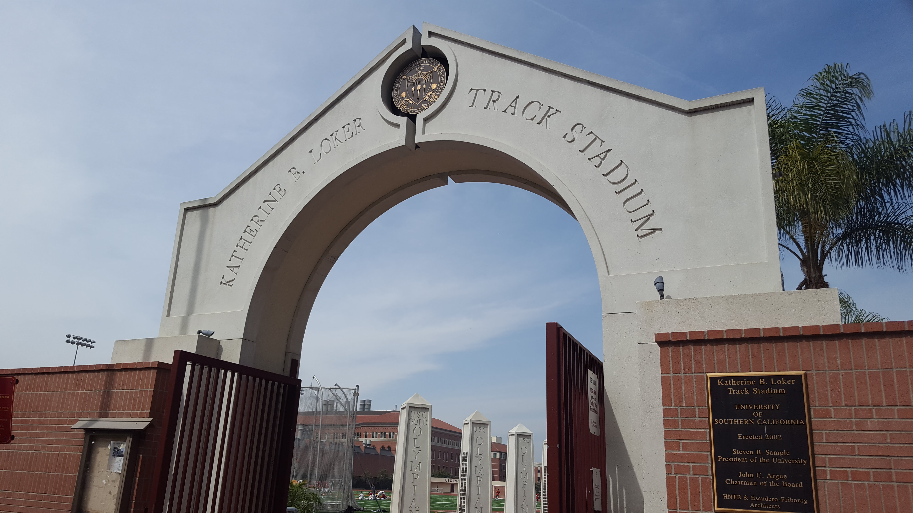
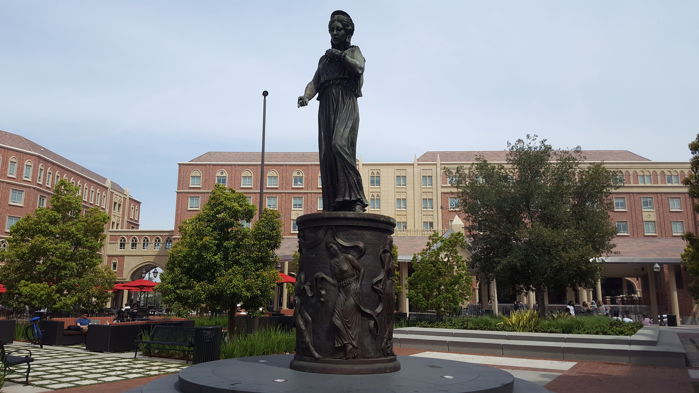
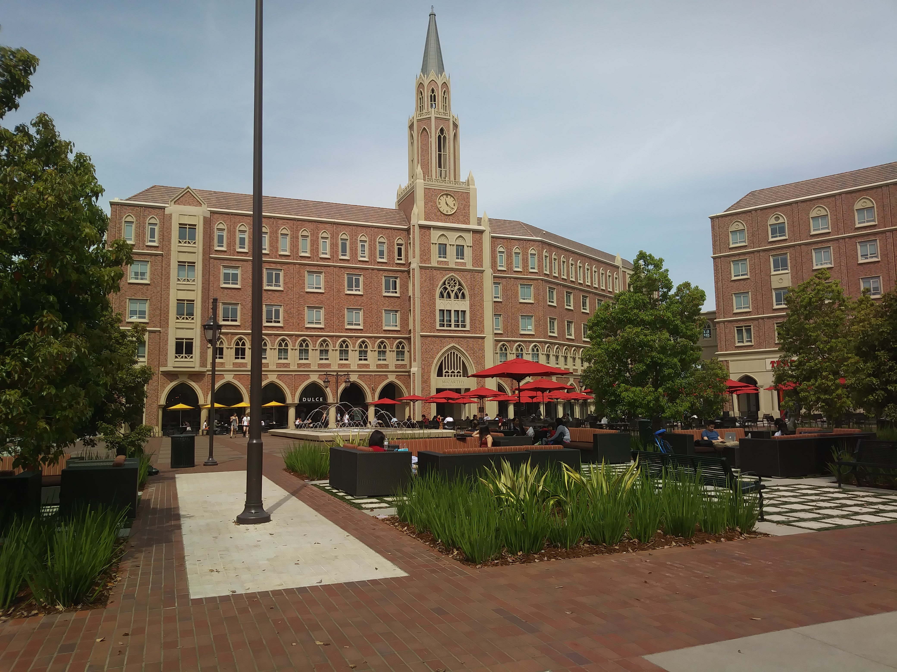
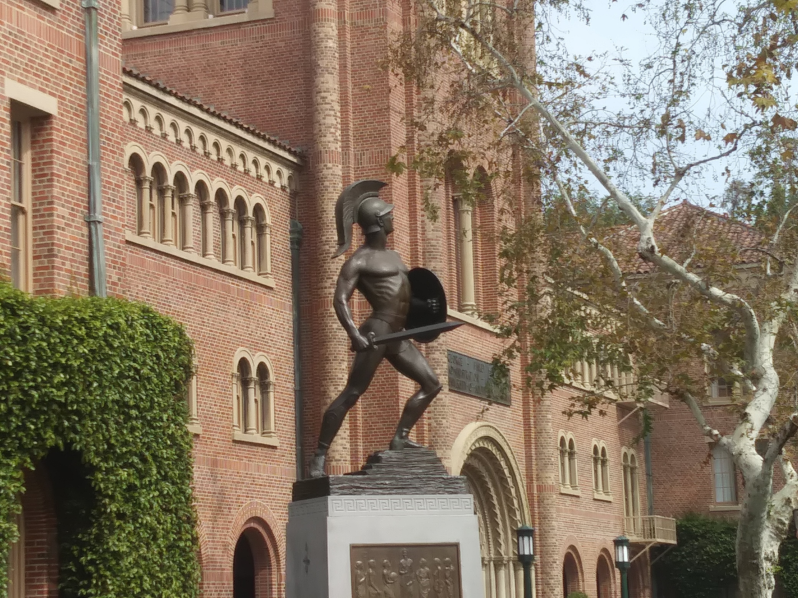
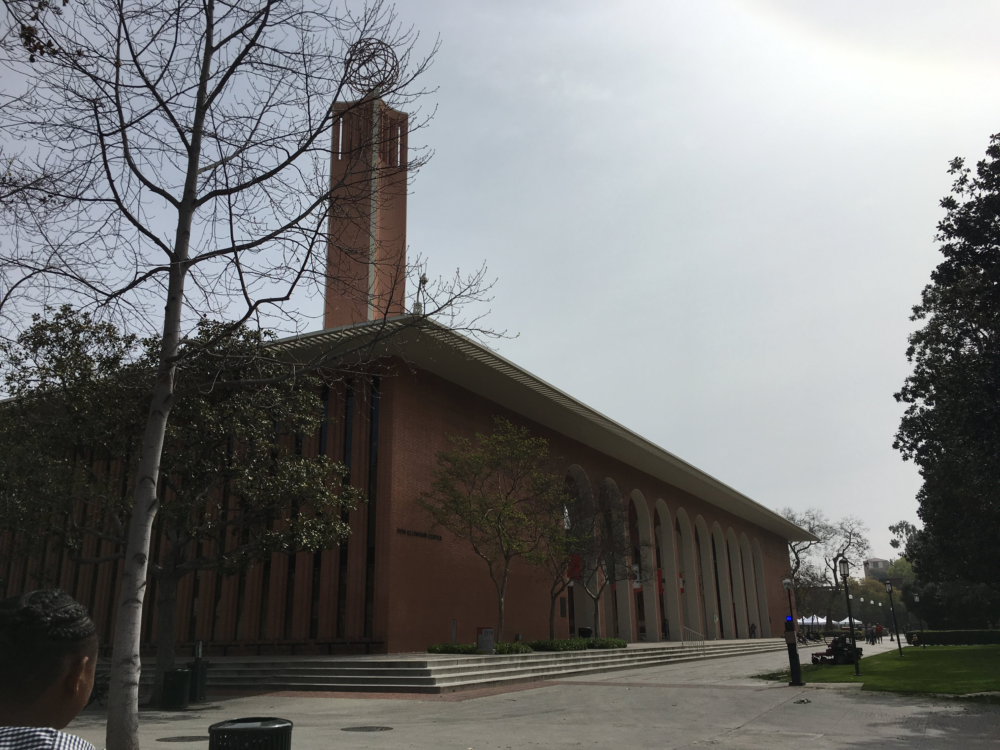

The E-Quad is located in the center of the engineering school, between the Olin Hall of Engineering, Biegler Hall, the Hedco Chemical Engineering building, the Neely Petroleum Engineering building, and Vivian Hall. In E-Quad, there is a nice lawn, multiple tables and chairs, and a pretty water fountain. I love this area for studying because it is conveniently located, fairly quiet, pretty, and functional.

Ethel Percy Andrus (September 21, 1884 – July 13, 1967) was a long-time educator and the first woman high school principal in California. She was also an elder rights activist and the founder of AARP in 1958.[1] In 1995 she was designated a Women's History Month Honoree by the National Women's History Project.[2]

Parkside Arts and Humanities is the newest building in USC’s residential education system – at least until the USC Village opens in Fall 2017. Standing four stories tall and bordered by Exposition Boulevard, Watt Way and 37th Place, PRB is at the southwestern end of the University Park Campus, across from the Los Angeles Natural History Museum.

The Story of USC Track and Field. USC is well known as one of the most successful athletic programs in the history of the NCAA, with 82 men's and women's national championships. The roots of Troy's preeminence date back to 1926, when coach Dean Cromwell brought the first NCAA track and field championship to USC.

Queen Hecuba will serve as the new symbol of Troy … celebrating our women of Troy,” the president told the crowd. The wife of the Trojan King Priam, Hecuba stood to preserve and protect her family and her city, he explained. Her story is told in classical works from Homer’s Iliad and Odyssey and Virgil’s Aeneid to Euripides’ timeless tragedies, Hecuba and The Trojan Women.

The Thomas and Dorothy Leavey Foundation, chaired by USC Trustee Kathleen Leavey McCarthy ’57, has donated $30 million to USC to create the Kathleen L. McCarthy Honors College at the new USC Village. The college will unite USC’s undergraduate scholarship and honors programs to establish a community of exceptional scholars.

Tommy Trojan, officially known as the Trojan Shrine, is one of the most recognizable figures of school pride at the University of Southern California. The life-size bronze statue of a Trojan warrior sits in the center of campus and serves as a popular meeting spot, as well as a centerpiece for a number of campus events. It is the most popular unofficial mascot of the university.

A pioneer in the oil exploration industry, Salvatori founded Western Geophysical Company of America, one of the world’s largest petroleum-exploration concerns. He was the driving force behind the development of reflection seismic methods of oil exploration that became industry standards and brought him international recognition as a pioneer in the field.

With the school's launch, USC became the first university in the country to offer a Bachelor of Arts degree in film. The school's founding faculty included Douglas Fairbanks, D.W. Griffith, William C. DeMille, Ernst Lubitsch, Irving Thalberg, and Darryl Zanuck, among others. Since its founding, the School of Cinematic Arts has had a profound impact on feature and independent film, television, film studies, animation, documentaries, commercials, and most recently, interactive media.

The USC History Department's official student association, is open to students of all majors and disciplines. It is an event-oriented club dedicated to stimulating, sustaining, and promoting interest in history through participation in campus programs and excursions around Los Angeles that highlight members' diverse areas of interest. Previous events have included movie nights, “Hands on History” events, “Drunk History” presentations, and history trivia events.

Ronald Tutor is an American businessman and investor. He is Chairman and Chief Executive Officer of Tutor Perini, and President of the Tutor-Saliba Corporation.

George Finley Bovard. After attending Indiana public schools, he completed his studies at India Asbury University (now known as DePauw University) while concurrently working as a schoolteacher. He earned his master’s in 1887, then returned to work as a minister and church administrator. In 1897, he was appointed presiding elder of the Los Angeles District, a position he held for six years.

When Wallis Annenberg Hall (ANN) opens in 2014, USC Annenberg will add eleven conference rooms, including a number of “unscheduled” rooms that can be used spontaneously for serendipitous meetings.

Joining its two sister structures, Parkside International Residential College and Parkside Apartments, to complete the Parkside Community, PRB is home to 440 primarily freshmen residents and three Residential Faculty members and their families. Together, Residential Faculty and Residential Education staff work to develop programs for residents that maximizes their college experience and provides added layers of support.